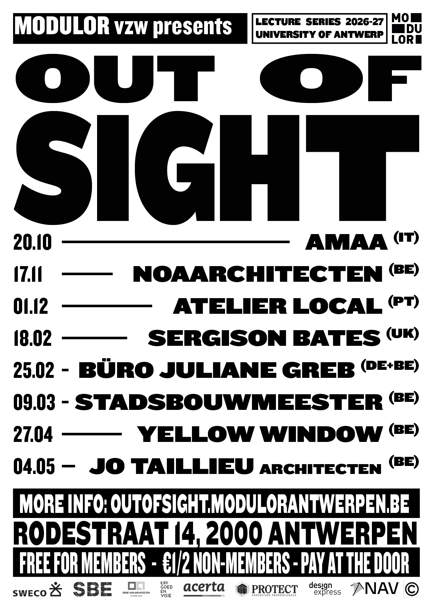
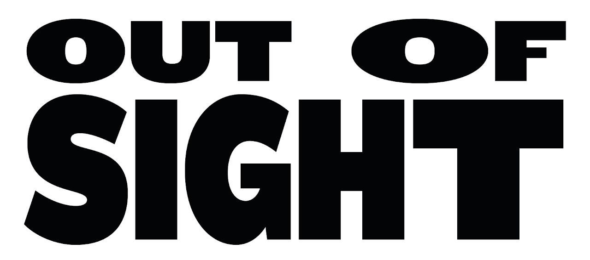
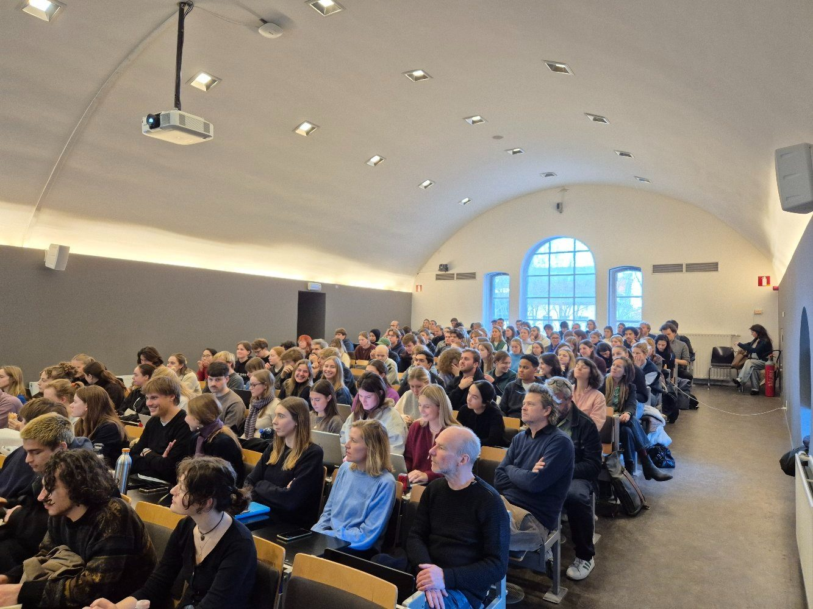

LEZINGEN.

Lezingenreeks 2026–27

We kennen architectuur vooral van haar successen: afgewerkte gebouwen, gewonnen wedstrijden, het perfect gefotografeerde eindbeeld. Maar het grootste deel van het werk van een architect blijft uit het zicht.
De vele verloren wedstrijden, de schetsen die nergens toe leidden, de varianten die sneuvelden, de twijfel die aan elke beslissing voorafging. Out of sight zet net dat in de kijker. We vragen architecten niet om hun portfolio te tonen, maar hun methode: het denkproces, de omwegen, de verworpen ideeën. Niet om het proces of het falen te romantiseren, maar omdat net daar zichtbaar wordt hoe een architect denkt.
Gratis voor leden, € 1 of € 2 voor niet-leden, te betalen aan de deur. Inschrijven hoeft niet. De lezingen zijn in het Engels.

PROGRAMMA.